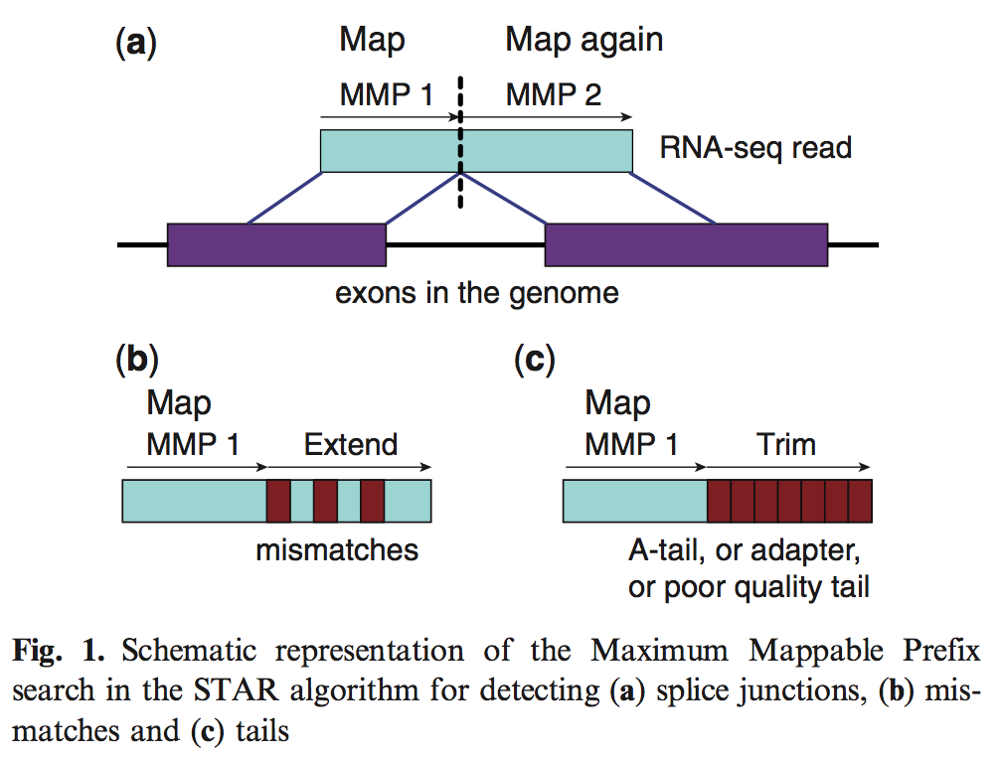

A Bioinformatics Paper Review

By Craig Sketchley
The Problem: RNA-Seq
RNA-seq: sequencing the mRNA within a cell at a given point in time:
- Identify where in the genome
- Characterisation of gene expression
High-throughput sequencing challenging to detect & characterise spliced transcripts
Two key tasks:
- Accurate alignment
- Mapping sequences from non-contiguous regions
Further challenges include presence of multiple copies of exons
Current Algorithmic Solutions
Offer compromises in either accuracy or resources required
Computational component becoming bottleneck
Mostly designed for short reads (≤ 200 bases)
Not great for "Third Generation Sequencing" (potentially full length reads)
What is STAR?
"Spliced Transcripts Alignment to a Reference" (STAR)
Designed to align non-contiguous sequences to the reference genome
Algorithm
The STAR algorithm consists of 2 main steps:
- Seed Search
- Clustering, stitching & scoring
Seed Search
 Write about the seed search part of the algorithm...
Clustering, Stitching and Scoring
Write about the clustering part of the algorithm...
Results
 Write about the results...
Write about the results...
Results

Write about the results...
Results
 Write about the results...
Write about the results...
Results
Write about the results...
Discussion
Summerise the discussion...